Másodfokú egyenlet képlet
x1,2 = -b ± √b2 -4ac
2a
Trigonometria
A sinust, cosinust, tangenst és pitagoras tételt csak derékszögű háromszögnél lehet használni.
Pitagorasz tétel

a2 + b2 = c2
sin2α + cos2α = 1
Terület számítás
Alap képletek
T = c * m
2
T = a * b
2
T = s * r
Terület számítás sinussal
T = b * c * sin α
2
Heron képlet
T = √s *(s-a)(s-b)(s-c)
s = a + b + c
2
Magasságtétel

m=√p*qㅤvagyㅤm2=p*q
Befogótételek
b=√p*cㅤvagyㅤb2=p*cㅤvagyㅤb2=p*(p+q)
a=√q*cㅤvagyㅤa2=q*cㅤvagyㅤa2=q*(q+p)
A szögfüggvények bevezetése
Derékszögű háromszögben az α hegyesszög szinuszának nevezzük a szöggel szemközti befogó és az átfogó hosszának hányadosát. Jelölése: sin α.
sin α = a
c
sin β = b
c
Derékszögű háromszögben az α hegyesszög koszinuszának nevezzük a szög melletti befogó és az átfogó hányadosátt. Jelölése: cos α.
cos α = b
c
cos β = a
c
Derékszögű háromszögben az α hegyesszög tangensének nevezzük a szöggel szemközti befogó és a szög melletti befogó hosszának hányadosát. Jelölése: tan α.
tan α = a
b
tan β = b
a
A sinus és cosinus értékének mindig 0,x-nek kell lennie és ebből számítjuk ki a szöget.
A tangest érték lehet lehet 1 fölötto amiből számoljuk ki a szöget.
Összefüggések a hegyesszögek szögfüggvényei között

tan α = sin α
cos α
Tetszőleges háromszögben érvényes a trigonometrikus területképlet:

t = a * b * sin γ
2
t = a * c * sin β
2
t = b * c * sin α
2
Szinusztétel
a : b : c = sin α : sin β : sin γ (A szokásos jelöléseket használva)
Bármely háromszögben az oldalak hosszának aránya megegyezik az oldalakkal szemközti szögek szinuszainak arányával.
a:b:c = sin α : sin β : sin γ
2R = ㅤaㅤ=ㅤbㅤ=ㅤcㅤ
sin αsin βsin γ
Levezetés:
a : b : c = 2R sin a : 2R sin b : 2R sin c = sin a : sin b : sin c
Cosinustétel
Bármely háromszögben c2=a2+b2-2ab*cos γ. (A szabályos jelöléseket használva)
A szimmetrikus összefüggések: a2=c2+b2-2cb*cos α és b2=c2+a2-2ca*cos β
c2=a2+b2-2ab*cos γ
a2=c2+b2-2cb*cos α
b2=c2+a2-2ca*cos β
Levezetés:
mc-re írjunk fel két féle pitagoras tételt:
mc2=b2-q2
mc2=a2-(c-q2)
b2-q2=a2-(c-q)2
a2=b2-q2+(c-q)2
a2=b2-q2+c2-2cq+q2
a2=b2+c2-2cq
a2=b2+c2-2cb*cos α
Háromszögbe és köré rajzolt kör
Minden háromszögbe és háromszög köré szerkeszthető körvonal. Ha a háromszögbe szerkeszted, akkor belülről érinti minhárom oldalt.
Ezt a szögfelezőkkel tudjuk megcsinálni.
A háromszög köré rajzolt kör pedig áthalad háromszög mindhárom csúcsán, ezt oldalfelező merőlegessel tudjuk megcsinálni.
t = a*b*c
4*R
t = r * s
s = a + b + c
2
Pitagorasz képlet
Mekkora az ,,a" oldalú szabályos háromszög magassága és területe? Egy szabályos háromszög magassága ,,m". Mekkora az oldala és területe?
m = √3 * a
2
T = √3 * a2
4
a = 2m
√3
T = m2
√3
Forgásszögek szögfüggvényei
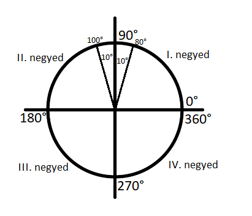
sin α = y = y
1
cos α = x = x
1
Sin:
az y tengelyről olvassuk le
sin 60 = sin 120
sin 240 = sin 300
Cos:
az x tengelyről olvassuk le
cos 30 = cos 150
cos 210 = cos 330
A sinus és a cosinus függvény 360° szerint ismétlődik, ami azt jelenti, hogy 360° szerint periodikus. Ezt figyelembe kell majd venni az egyenletek megoldásánál.
A tangens alfa és cotangens alfa általánosítás
sin α
tg α = cos α , ha α ≠ 90°+k*180°, k ∈ Z (egész szám).
Az egységkör P(1,0) pontjába húzőtt érintőjét szokás ,tangens tengelynek' is nevezni, amelyben a pozitív irány az y tengelyével megegyező.
A tangensnél a periódus csak 180°.
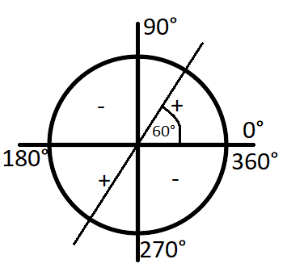 cos α
ctg α = sin α , ha α ≠ 0°+k*180°, k ∈ Z.
A kikötésben szereplő szögek esetén a nevezőben 0 lenne, márpedig ezt nem engedhetjük meg.
Ctg is 180° szerint periodikus.
A tangens és a cotangens közti összefüggés
tg x = sin x
cos x
cotg x = cos x
sin x
tg x * cotg x = sin x * cos x = 1
cos xsin x
tg x * cotg x = 1
Függvény periódusa, maximuma, minimuma, növekvő függvény, csökkenő függvény
Függvény periódusa:
Ha egy f függvényhez létezik egy olyan ,a' pozitív szám, hogy f(x)=f(x+a) akkor az ,a' számot a függvény periódusának nevezzük.
pl.: sin és cos periódusa 360° vagy 2*𝝿
tg és cotg periódusa 180° vagy 𝝿
Függvény maximuma:
A legnagyobb felvett függvényértéket a függvény maximumának nevezzük.
Függvény minimuma:
A legkisebb felvettffüggvényértéket a függvény minimumának nevezzük.
Egy függvény akkor növekvő, ha: x1<x2, akkor f(x1)<f(x2)
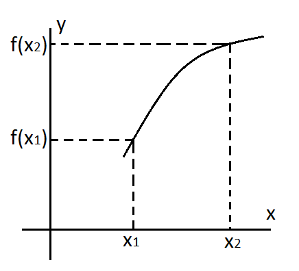Egy függvény akkor csökkenő, ha: x1<x2, akkor f(x1)>f(x2)
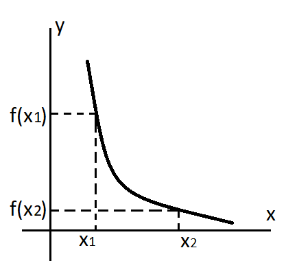Sin x függvén:
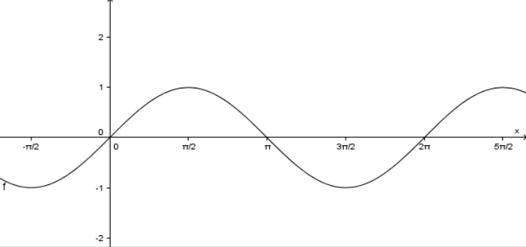A sin függvény maximuma 1, amit a 𝝿/2 +k*2𝝿 helyen vesz fel, 90°+k*360°.
A sin függvény minimuma -1, amit a 3𝝿/2 +k*2𝝿 helyen vesz fel 270°+k*360°.
k az egész szám: -3, -2, -1, 0, 1, 2, 3
periódus: 360° vagy 2𝝿
növekvő: [-90°+k*360°; 90°+k*360°]
csökkenő: [90°+k*360°; 270°+k*360°]
Cos x függvény:
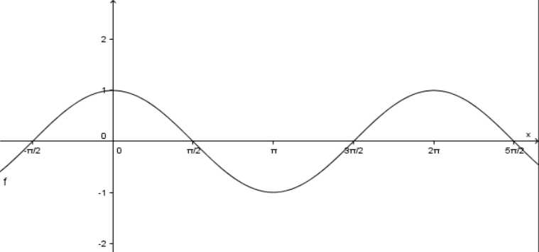A cos függvény maximuma 1 az x=k*2𝝿 helyen (k ∈ Z)
A cos függvény minimuma -1 az x=𝝿+k*2𝝿 helyen (k ∈ Z)
periódus: 360° vagy 2𝝿
szigorúan monoton növekvő: [𝝿+k*𝝿; 2𝝿+k*2𝝿]
szigorúan monoton csökkenő: [k*2𝝿; 𝝿+k*2𝝿]
Tan x függvény:
sin α
A tg α = cos α definíció alapján tg x nem értelmezett, ha cos x = 0, azaz x=𝝿/2 +k*𝝿, k ∈ Z.
A függvény jellemzése:
- Df={x∈R, x≠𝝿/2 +k*𝝿, k∈Z}
- Rf=R
- A függvény periodikus, periódusa 𝝿.
- A függvénynek se minumuma, se maximuma nincs.
- A függvény páratlan függvény, mert tg x = -tg(-x).
- Szigorúan monoton nő pl.: -3𝝿/2 -től -𝝿/2 -ig; 3𝝿/2 -től 5𝝿/2 -ig
- Zérushelye k*𝝿.
Cotan x függvény:
cos α
A ctg α = sin α definíció alapján ctg x nem értelmezett, ha sin x = 0, azaz x=k*𝝿, k ∈ Z.
A függvény jellemzése:
- Df={x∈R, x≠k*𝝿, k∈Z}
- Rf=R
- A függvény periodikus, periódusa 𝝿.
- A függvénynek se minumuma, se maximuma nincs.
- A függvény páratlan függvény, mert ctg x = -ctg(-x).
- Szigorúan monoton csökken pl.: -2𝝿 -től -𝝿 -ig; 𝝿 -től 2𝝿 -ig
- Zérushelye: x=𝝿/2 +k*𝝿, k∈Z
Páros és páratlan függvények
Páros függvény:
Mindig az y tengely szerint szimmetrikus
x2, a hatvány páros szám
x2=(-x)2
Páratlan függvény:
Mindig az origo szerint szimmetrikus
2x1, a hatvány páratlan szám
2x=-2(-x)
Sin: páratlan
Cos: páros
Tg: páratlan
Ctg: páratlan
Kombinatorika
Permutáció
Ha adott ,n' elemet minden lehetséges módon sorrendbe rakunk, akkor permutációról beszélünk. Ha az összes elem különböző akkor ismétlés nélküli permutációról beszélünk.
pl.: Hány lehetséges módon lehet egymás mellé letenni a piros, sárga, zöld és kék színt?
n! = 4! = 4 * 3 * 2 * 1 = 24
Ha az elemek között vannak azonosak, akkor ismétléses permutációról beszélünk.
pl.: A MATIKA szó betűiből hány szót lehet kirakni?
ㅤㅤㅤn!ㅤㅤㅤ = ㅤ6!ㅤ = 720 = 360
ism.1! * ism.2!2!2
ism. = ismétlődő
Variáció
Ha ,n' különböző elem közül minden lehetséges módon kiválasztunk ,k' elemet úgy, hogy a sorrend is fontos, akkor variációról beszélünk.
pl.: Futóversenyen futnak 8-an. Hányféle képpen végezhetnek az 1., 2. és 3. helyen?
ㅤn!ㅤ = 8! = 8! = 8 * 7 * 6 * 5! = 8 * 7 * 6 = 336
(n-k)!(8-3)!5!5!
Abban az esetben, ha ismétlődés lehetséges, vagy ugyanaz az elem többször fordulhat elő és a sorrend is számít, akkor ismétléses variációról beszélünk.
pl.: Egy pénzdarabbal 3 dobást végzünk. Hányféle dobássorozat lehetséges, ha a dobások sorrendjét nem vesszük figyelembe?
(A pénzérmének 2 oldala van)
nk = 23 = 8
Kombináció
Ha ,n' különböző elem közül szeretnénk kiválasztani ,k' elemet, de az elemek sorrendjére nem vagyunk tekintettel, akkor kombinációról beszélünk.
pl.: 8 kártyalap közül hány féle képpen húzhatunk ki 5-öt, ha a sorrendet nem vesszük figyelembe?
olvasd: ,n' alatt a ,k'ㅤ(nk) = ㅤn! ㅤ = (85) = ㅤㅤ8!ㅤㅤ = ㅤ8!ㅤ = 8 * 7 * 6 * 5! = 56
k! * (n-k)!5! * (8-5)!5! * 3!5! * 3 * 2 * 1
Sorrend nem számít, de lehet ismétlődés is.
pl.: Négy db 5 forintossal hány különböző dobás lehetséges, ha a sorrend nem számít és ismétlődhet?
(n +kk - 1)
A lehetséges esetek száma: fej, írás (2)
n = 2
Hányszor végezzük el: 4 dobás
k = 4
(n +kk - 1) = (2 +44 - 1) = (54) = (nk) = ㅤ5!ㅤ = 5
4!
Valószínűség számítás
Olyan jelenségekkel foglalkozik, amelyek azonos körülmények között többször is megimételhető.
pl.: Mennyi az esélye hogy egy kockával pont hatot dobunk?
p = k
n
k = kedvező esetek száma (1 db, amikor 6-os)
n = lehetséges esetek száma (6db, amennyi a kocka oldala)
p = 1 = 0,16 * 100 = 16,6% az esélye, hogy pont 6-ost dobunk.
6
Statisztika
Statisztika az elvégzett mérések re alapozva különféle tulajdonságokat vizsgál.
Egy adat gyakoriságán azt a számot értjük, ahányszor az adat a mintában előfordul.
Egy adat relatív gyakoriságán a gyakoriság és a minta elemszámának hányadosát értjük.
A relatív gyakoriság százalékban kifejezett értékét százalékos gyakoriságnak nevezzük.
pl.: Az osztályba 21 tanuló jár. A dolgozatra 5-öst 3-an kaptak, 4-est 6-an, 3-ast 5-en, 2-est 3-an és 1-est 4-en.
Készítsünk táblázatot ezekből az adatokból és használkuk fel a következő kifejezéseket is.
| osztályzat | abszolút gyakoriság | relatív gyak. | százalékos gyak. |
|---|---|---|---|
| 5 | 3 | 0,14 | 14% |
| 4 | 6 | 0,28 | 28% |
| 3 | 5 | 0,23 | 23% |
| 2 | 3 | 0,14 | 14% |
| 1 | 4 | 0,19 | 19% |
minta elemszáma: gyakoriság Σ = 21
Σ = szumma (összeg)
Az adatokból gyakran grafikont kell készíteni. A leggyakoribb grafikon az oszlopdiagram és kördiagram. Készítsük el az előző feladat oszlopdiagramját.
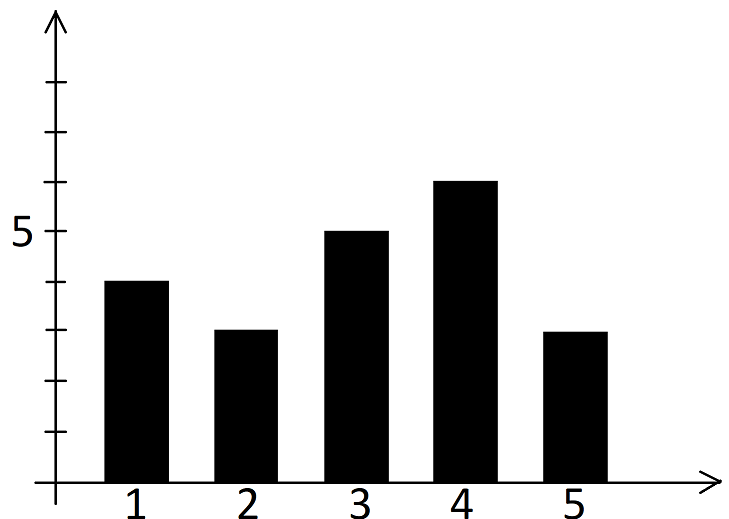
A mintában leggyakrabban előforduló adatot a minta móduszának nevezzük. Módusz lehet több is.
5-ös 3db, 4-es 6db, 3-as 5db, 2-es 3db és 1-es 4db
módusz: 4
A minta nagyság szerint rendezett adatai közül a középsőt mediánnak nevezzük.
Páratlan számú adatnál mindig a középső, páros számnál pedig a két középső adat számtani közepe.
555444444333332221111 ami közül a középső 5554444443[3]3332221111
medián: 3
A számtani közép vagy más néven aritmetikai átlagot úgy számoljuk ki, hogy összeadjuk az adatokat és elosztjuk a darabszámmal.
5*3+4*6+3*5+2*3+1*4 = 64 = 3,05
2121
számtani közép: 3,05
A minta terjedelme a legnagyobb és a legkisebb elem különbsége.
5-1
minta terjedelme: 4
A minta adatainak a számtani közepétől való átlagos négyzetes eltérését szórásnégyzetnek nevezzük.
(5-3,05)2*3+(4-3,05)2*6+(3-3,05)2*5+(2-3,05)2*3+(1-3,05)2*4 =
21
= 36.95
21
szórásnégyzet: 1,76
Ha ebből a szórásnégyzetból gyököt vonunk, akkor megkapjuk a szórást.
√1,76
szórás: 1,33
Függvények tulajdonságai
Az értelmezési tartományt könnyebb meghatározni, mivel csak azt kell megvizsgálni, hogy mikor nincs értelme. Ha ezt sikerült, akkor az összes valós számból le kell vonni azt amikor nincs értelme. A törtnek akkor nincs értelme, ha a nevező 0.
A zérushelyet úgy kell megatározni, hogy a lehető legegyszerűbb alakra hozzuk a függvényt kiemeléssel, egyszerüsítéssel, majd az eredményt egyenlővé tesszük nullával. Egy tört akkor nulla, ha a számláló nulla. Minden tényezőt meg kell vizsgálni.
Nevezetes azonosságok
(a±b)2 = a2 ± 2ab + b2
(a±b)3 = a3 ± 2ab2 + 2a2b ± b3
(-a-b)2 = (-a)2 + 2(-a)(-b) + (-b)2
(a+b)(a-b) = a2 - b2
(a+b)(a2-ab+b2) = a3 + b3
(a-b)(a2+ab+b2) = a3 - b3
Egész kitevőjű hatványok, azonosságok
am * an = am+n
(a * b)n = an * bn
am = am-n
an
(a/b)n = an
bn
(an)m = an*m
Számok ,n' gyöke
(√a)2 = a, a≥0
n√a*b=n√a *n√b
n√a/b=n√a
n√b
n√m√a=n*m√a
n√am=an/m
(n√a)m=n√am
n√a
Ha ,n' páratlan, akkor gyök alatt lehetséges negatív szám, mivel egy negatív szám páratlan hatványa is negatív.
Ha ,n' páros, akkor gyök alatt nem lehetséges negatív szám, mivel egy negatív szám páros hatványa pozitív.
Logaritmus azonosságai
Szorzat logaritmusa
loga(x*y)=logax+logay
Hányados logaritmusa
loga x =logax-logay
y
Hatvány logaritmusa
logabk=k*logab
n-edik gyök logaritmusa
logan√b=logab
n
Áttérés tízes alapú logaritmusra
logab=log10b=lg b
log10alg a
Függvények
Hatványfüggvény:
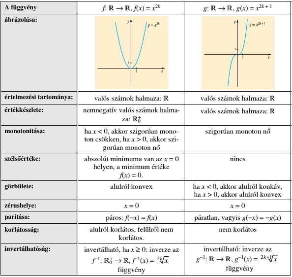Négyzetgyökfüggvény:
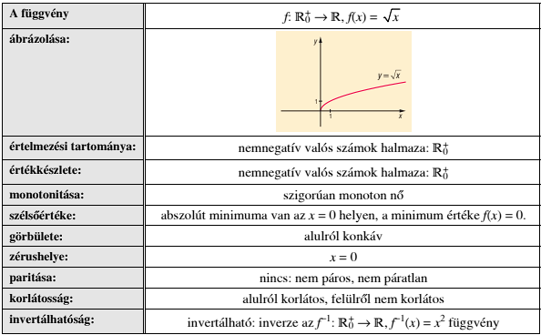Exponenciális függvény:
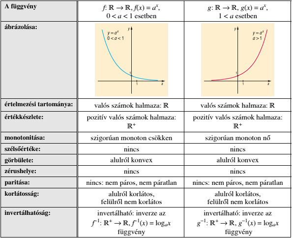Logaritmusfüggvény:
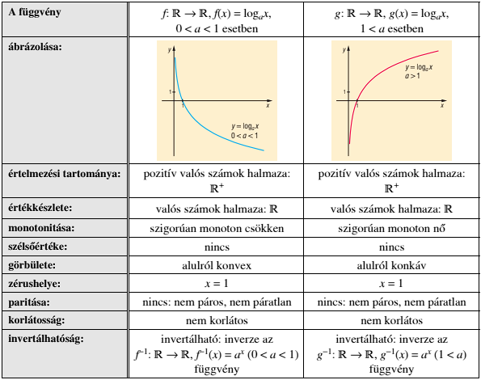Oszthatóság, számelmélet alapjai
A maradékos osztás
Bármely ,a' természetes számhoz és ,b' pozitív egész számhoz található olyan negatív ,q' és ,r' egész szám, amelyre a=b*q+r, ahol 0≤r<b. A ,q' számot hányadosnak, az ,r' számot maradéknak nevezzük.
Oszthatóság fogalma
Ha az ,a' és ,b' természetes számhoz található olyan ,q' természetes szám, melyre a=b*q, akkor azt mondhatjuk, hogy ,a' osztható ,b'-vel vagy ,b' osztója ,a'-nak.
Így jelöljük: b|a
Oszthatósági szabályok
Egy szám akkor osztható 2-vel, ha páros.
Egy szám akkor osztható 3-mal, ha a számjegyeinek az összege osztható 3-mal.
Egy szám akkor osztható 4-gyel, ha utolsó két számjegye osztható 4-gyel.
Egy szám akkor osztható 5-tel, ha utolsó számjegye 0 vagy 5.
Egy szám akkor osztható 6-tal, ha osztható 2-vel és 3-mal is.
Egy szám akkor osztható 8-cal, ha utolsó három számjegye osztható 8-cal.
Egy szám akkor osztható 9-cel, ha számjegyeinek összege osztható 9-cel.
Egy szám akkor osztható 10-zel, ha utolsó számjegye 0.
Egy szám akkor osztható 12-vel, ha oszható 4-gyel és 3-mal is.
Egy szám akkor osztható 25-tel, ha utolsó két számjegye osztható 25-tel.
Egy szám akkor osztható 100-zal, ha utolsó két számjegye 0.
Prímszámok, a számelmélet alapelve
Prímszámok azok a pozitív egész számok, amelyeknek pontosan két különböző osztójuk van. Az 1 nem prímszám, mert nem két különböző osztója van. A legelső prímszám a 2. Ez az egyedüli prímszám. Ami nem prímzám az össszetett szám. Végtelensok prímszám van.
A számelmélet alaptétele
Bármely összetett szám felbontható prímszámok szorzatára. A felbontás a prímszámok sorrendjétől eltekintve egyértelmű. (Bárhogyis sikerül a felbontást elvégezni, mindig ugyanarra az eredményre jutunk.)
Ha egy pozitív egész sikerül prímszámok szorzatára felbontani, majd hatványalakba felírni, akkor abból az alakból rögtön felírható a pozitív egész szám osztóinak a száma: A=p1α1*p2α2*p3α3...pnαn(prímszámos felbontás hatványalakba)
Pozitív egész osztóinak a száma (α1+1)*(α2+1)*(α3+1)...(αn+1)
Legnagyobb közös osztó, legkisebb közös közös többszörös
A legnagyobb közös osztó előállítható a következő módon
A számok prímfelbontása után a közös prímtényezőket az előforduló legkisebb közös hatványon összeszorozzuk. Jelölése: (a;b). (Néha kiírjuk a rövidítést is: lnko(a;b).)
A legkisebb közös többszörös előállítható a következő módon
A számok prímfelbontása után minden prímtényezőből az előforduló legnagyobb hatványúakat szorozzuk össze. Jelölése: [a;b]. (néha kiírjuk a rövidítést: lkkt(a;b).)
Két szám legnagyobb közös osztójának és legkisebb közös többszörösének szorzata egyenlő a két szám szorzatával: (a,b)*[a,b]=a*b
Vektorok
Fizikában két féle mennyiség ismert. Egyik a skaláris mennyiség, a másik meg a vektormennyiség. A kettő között az a különbség, hogy a skaláris mennyiségnek csak nagysága van. Például tömeg, sűrűség, idő, hőmérséklet.
A vektromennyiségeknek a nagyság mellett irányuk is van. Például sebesség, erő, forgatónyomaték, gyorsulás. A vektorokat nyilakkal ábrázoljuk. A nyíl nagysága fogja mutatni a vektoroknak a nagyságát, az iránya pedig a vektoroknak az irányát. A vektorokat másnéven irányított szakaszoknak is hívjuk.
Két vektor egyenlő, ha nagysága és iránya egyenlő.
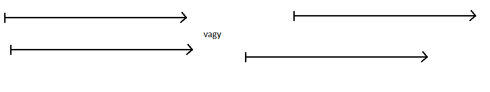Az ellentett vektorok nagyságai ugyanakkorák, csak ellentett irányúak.
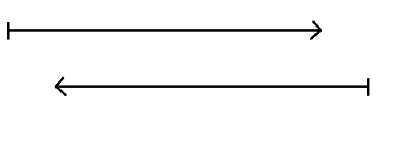Műveletek vektorokkal
1. Azonos irány:
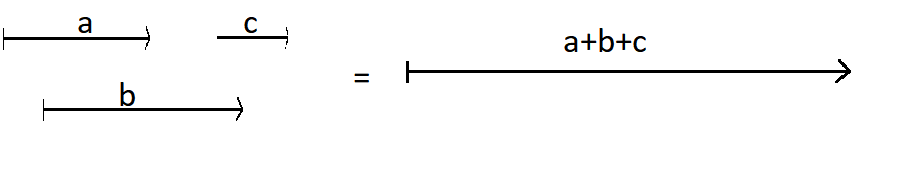2. Ellentétes irány:
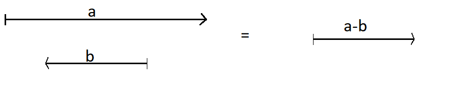3. Paralelogramma szabály:
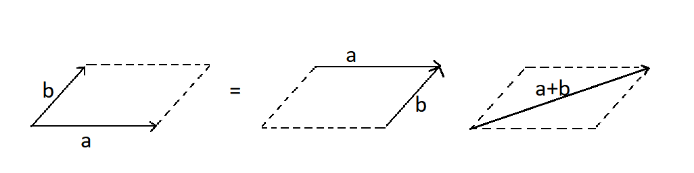a-b=a+(-b)
Kivonásnál az a+(-b) képletet használjuk. A vektrorok iránya a kissebítendő felé megy a kivonandó felől.
Legyen adott az ,a' vektor és egy λ valós szám.
- Ha a≠0, akkor az ,a' vektor és a λ szám szorzata az a vektor, amelynek abszolút értéke |λ|*|a| és
λ>0 esetén iránya az ,a' vektor irányával megegyező;
λ>0 esetén iránya az ,a' vektor irányával ellentétes;
λ=0 esetén λa=0, így iránya tetszőleges. - Ha a=0, akkor λa=0.
Vektorok a koordinátasíkon, helyvektorok
Az egyértelmű vektorfelbontás tétele:
Ha adottak az ,a' és ,b' nem párhuzamos vektorok, akkor bármoly, velük egysíkú ,v' vektor egyértelműen felbontható az adott vektorokkal párhuzamos összetevőkre, azaz egyértelműen felírható
v=αa+βb
alakban, ahol α∈R, és β∈R.
v=α*a+*b+*c
a=5*i+2*j
Az ,i' és ,j' vektorokat bázisvektoroknak nevezzük.
=B-A